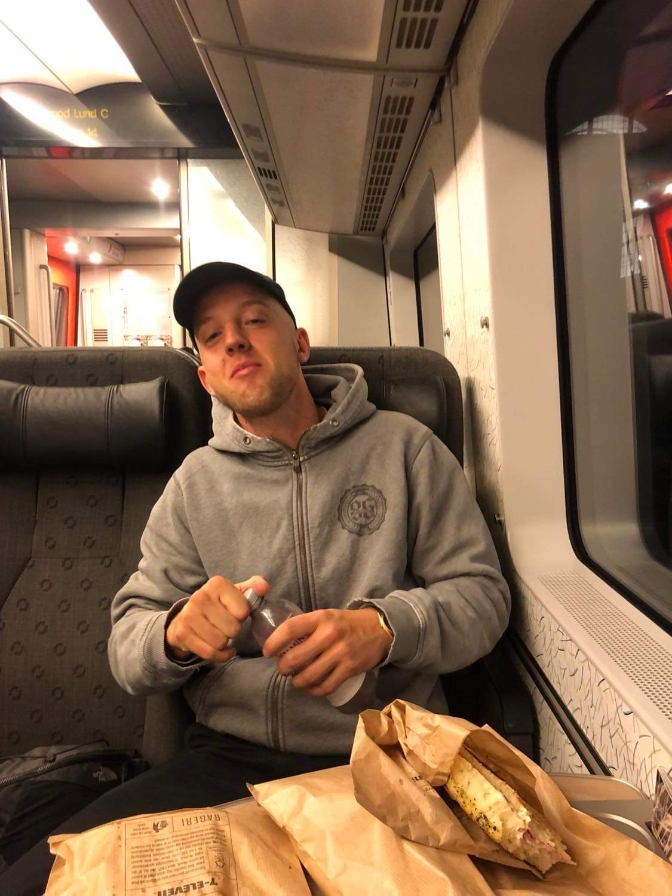

Hvem er jeg?
Historien om hvordan jeg lærte et nyt sprog

Det hele startede tilbage i 4000 Roskilde, hvor jeg voksede op. Folkeskole,
efterskole, gymnasium, højskole og nu It-arkitektur på Kea. En oase inde
i midten af nørrebro, med fri benyttelse af de forskellige kiosker og kebaber.
Efter gymnasiet startede jeg, (sammen med 3 gode kammerater) vores eget rydnings-firma.
Hvor jeg har lært at være et selvstændigt, kreativt og ansvars bevidst væsen. Dette
firma har jeg arbejdet med i 2 år og følte jeg havde brug for, at lave noget nyt.
Så derfor tog jeg på højskole, en skole i byen, i odsherred, hvor der er danmarks højeste
rate af narko kørsler, nemlig Vallekilde. Her lærte jeg, at være et medmennekseligt, open-mided
og tålmodigt væsen.
Kom tilbage til mit firma Mortem Boligryd og påbegyndte et tralvt år, hvor jeg
lærte, at blive mere ensom, indelukket og negativt væsen. Som havde brug for at
lære noget nyt, se nogen nye mennesker og vigtigst af alt stabilitet.
Her startet mit nyeste og største eventyr hidtil. Skal sidde stille i et klasse
lokale hver dag. Hvor jeg i stedet har været vant til, at sidde i en varevogn med to af
mine gode kammerater. Glæder mig helt vildt meget og jeg er allerede mega intresseret i
HTML og CSS.
Kompetencer
Hvad er jeg god til?
Jeg virkelig lærenem, jeg har altid en god attitude til, at skabe gode relationer både inde og ude for skole. Jeg er helt utrolig ressorce stærk, så jeg har hurtigt ved, at komme på en ny ide.
Hvad skal du bruge mig til?
Hvis du ansætter et væsen som mig, så er jeg altid hurtig til at komme på nye ideer. Få en fornemmelse af hvordan folk omkring mig, har det. Jeg prøver altid at finde den mest effektive metode.
Lidt sjov information omkring mig
Er top 4 % i spillet rocket leauge, jeg kan løbe ...